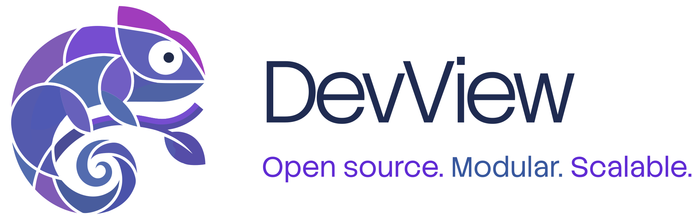
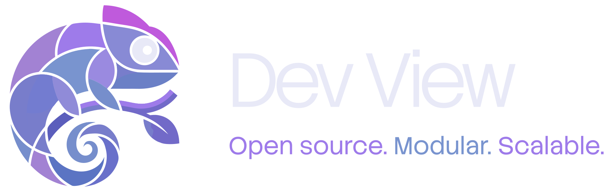

DevView


A powerful, modular developer tools framework for Kotlin Multiplatform applications


What's New
v0.2.0-alpha01
Added
Operation.version: a display-only version tag extracted from a/v{n}/path segment (e.g./api/v2/x→"v2"), shown as a chip on each operation in the NetworkMock UI. Purely a UI label — request matching is unaffected. (devview-networkmock-core,devview-networkmock)- NetworkMock UI: a search field (filters by name, path, or operationId) and a per-tab version filter row, both client-side over already-loaded data. (
devview-networkmock) - A migration guide and a
scripts/mocks_json_to_openapi.pyconversion script for integrators upgrading from a pre-0.2.0mocks.jsonconfig. devview-consoleloggermodule: displays the app's native console output (logcat on Android, a stdout/stderr redirect on iOS) inside the DevView overlay, with per-level filter chips, a text filter, and auto-follow. Capture works on an untethered device (no debugger required) on both platforms; an optionalDevViewLogWriterroutes Kermit-based logging into the same view, closing the one remaining gap (NSLog/os_logon iOS with no debugger attached). Log-level colors are configurable via aLocalLogColorSchemeCompositionLocal. (devview-consolelogger)- TimeCapsule rows now show a per-state change summary (e.g.
count 3 → 4) derived from akey=value-shaped label, expandable to reveal the full label with changed values highlighted, plus a wall-clock timestamp alongside the existing delta pill. The screen now shows a header naming the recorded owner. (devview-timecapsule)
Changed
- Breaking:
devview-networkmock-corenow parses OpenAPI 3.x documents (JSON, and YAML on a best-effort basis) instead of the bespokemocks.jsonformat. One spec file is one API group — the environment axis is gone entirely; a group's request-matching hosts come from the spec'sservers[]list, and an app talking to two hosts for the same API is simply two operations with different paths in one document.NetworkMock(configPath: String)is nowNetworkMock(specPaths: List<String>). See the migration guide. (devview-networkmock-core,devview-networkmock,devview-networkmock-ktor) - Renamed to OpenAPI vocabulary throughout the networkmock modules:
ApiGroupConfig→ApiSpec,EndpointConfig→Operation,EndpointKey→OperationKey(drops theenvironmentIdcomponent),EndpointDescriptor→OperationDescriptor,EndpointMockState→OperationMockState,GroupEnvironmentUiModel→ApiSpecUiModel,EndpointUiModel→OperationUiModel.MockResponseandMockMatchare deliberately not renamed — they model DevView's own runtime mocking behavior, not something OpenAPI describes.EnvironmentConfig,EndpointOverride, andeffectiveEndpointsare deleted. - Response variant discovery now reads the spec's declared
responses.<code>.content.*.examplesinstead of probing status-code/suffix combinations against the filesystem.OperationMockState.Mockis now keyed by(statusCode, exampleName)instead of a response file name. (devview-networkmock-core) - Response delay simulation is now declared via the
x-devview.delayMsOpenAPI Specification Extension, at the document root (spec-wide default) and/or per operation (overrides the default) — replacingApiGroupConfig.defaultDelayMs/EndpointConfig.delayMs. (devview-networkmock-core) - DataStore entries written under the pre-0.2.0 key shape (
network_mock_endpoint_{groupId}-{environmentId}-{endpointId}) are wiped once on first launch after upgrading — the key shape and theMockpayload shape both changed, so a translation wasn't attempted. The global mocking toggle is unaffected. (devview-networkmock-core) OperationDescriptorno longer carriesavailableResponses— the main operation list never read them, soNetworkMockViewModelno longer eagerly discovers and decodes every response body on app start. Response variants are now only loaded when an operation's detail screen actually opens (NetworkMockEndpointUiState.Content.responses). (devview-networkmock-core,devview-networkmock)TimeCapsuleEffectgains asubtitleparameter, inserted betweenlabelandmaxEntries. Callers passingmaxEntriespositionally must switch to a named argument. (devview-timecapsule)
What is DevView?
DevView is an extensible, in-app developer tools framework designed for Kotlin Multiplatform applications. It provides a unified interface for debugging, testing, and managing development features across Android and iOS platforms.
Getting Started
Ready to integrate DevView into your project?
-
Get DevView up and running in minutes
-
Build your first DevView integration
-
Explore available modules and features
-
Detailed API documentation
Key Features
- 🎯 Modular Architecture – Pick and choose the modules you need
- 🔧 Feature Flag Management – Toggle features on/off during development and testing
- 📊 Analytics Debugging – Monitor and inspect analytics events in real time
- 🎨 Compose Multiplatform UI – Native Material Design 3 interface
- 🔐 Type-Safe Navigation – Built on Navigation3 with kotlinx.serialization
- 💾 Persistent State – Feature states survive app restarts with DataStore
- 🚀 Easy Integration – Simple setup with minimal boilerplate
- 📱 Cross-Platform – Works seamlessly on Android and iOS
Quick Example
@Composable
fun App() {
var isDevViewOpen by remember { mutableStateOf(false) }
val modules = rememberModules {
module(FeatureFlip)
module(Analytics())
}
Box {
// Your main app content
MainAppContent()
// DevView overlay
DevView(
devViewIsOpen = isDevViewOpen,
closeDevView = { isDevViewOpen = false },
modules = modules
)
// Debug trigger
FloatingActionButton(
onClick = { isDevViewOpen = true }
) {
Icon(Icons.Default.DeveloperMode, "Open DevView")
}
}
}
Available Modules
🎚️ FeatureFlip
Manage feature flags with support for both local and remote features.
- Simple on/off toggles for local features
- Remote configuration with local overrides
- Persistent state management
- Search and filter capabilities
Learn more about FeatureFlip →
📊 Analytics
Monitor and debug analytics events in real time.
- Real-time event logging
- Multiple event types (Screen, Event, Custom)
- Tabular display with timestamps
- Event type filtering
🌐 NetworkMock
Mock and control network requests and responses for development and testing.
- Mock network requests and responses
- UI for toggling global and per-endpoint mocks
- Ktor plugin for HTTP interception
- Persistent configuration/state
- Multiplatform support (Android/iOS)
Learn more about NetworkMock →
🔧 Custom Modules
Extend DevView with your own custom modules.
- Simple module interface
- Type-safe navigation
- Automatic UI integration
- Section-based organisation
Learn how to create custom modules →
Why DevView?
Tip: DevView is designed to save you time and make debugging, testing, and feature management a breeze. Integrate it early in your project for maximum benefit!
For Developers
- Faster Debugging – Inspect feature flags and analytics without rebuilding
- Better Testing – Toggle features to test different configurations
- Enhanced Visibility – See exactly what's happening in your app
- Time Savings – No need to navigate deep into settings or rebuild
For QA Teams
- Feature Validation – Verify features work in all states
- Analytics Verification – Confirm events fire correctly
- Test Scenarios – Easily switch between different feature configurations
- Bug Reporting – Include feature states in bug reports
For Product Teams
- Risk Mitigation – Test features before full rollout
- Gradual Rollouts – Control feature availability
- Quick Rollbacks – Disable problematic features instantly
- Data-Driven Decisions – Monitor feature usage and analytics
Platform Support
| Platform | Minimum Version | Status |
|---|---|---|
| Android | API 26 (Oreo) | ✅ Stable |
| iOS | iOS 16.0 | ✅ Stable |
Architecture
DevView follows a modular architecture where each module is:
- Self-Contained – Modules manage their own state and UI
- Type-Safe – Uses kotlinx.serialization for navigation
- Composable – Built entirely with Compose Multiplatform
- Extensible – Easy to add new modules
graph TD
A[DevView Framework] --> B[Core Module]
A --> C[FeatureFlip Module]
A --> D[Analytics Module]
A --> NM[NetworkMock Module]
A --> E[Custom Modules]
B --> F[Module Registry]
B --> G[Navigation System]
B --> H[UI Components]
C --> I[Feature Handler]
C --> J[DataStore Persistence]
D --> K[Analytics Logger]
D --> L[Event Display]
NM --> MC[Mock Config Engine]
NM --> MS[Mock State DataStore]
NM --> KP[Ktor Plugin]Community & Support
- 📖 Documentation – You're reading it!
- 💬 Discussions – GitHub Discussions
- 🐛 Bug Reports – GitHub Issues
- 💡 Feature Requests – GitHub Issues
Licence
DevView is released under the Apache Licence 2.0.
Copyright 2024-2026 Maxime Michel
Licensed under the Apache Licence, Version 2.0 (the "Licence");
you may not use this file except in compliance with the Licence.
You may obtain a copy of the Licence at
http://www.apache.org/licenses/LICENSE-2.0
Made with ❤️ by Maxime Michel